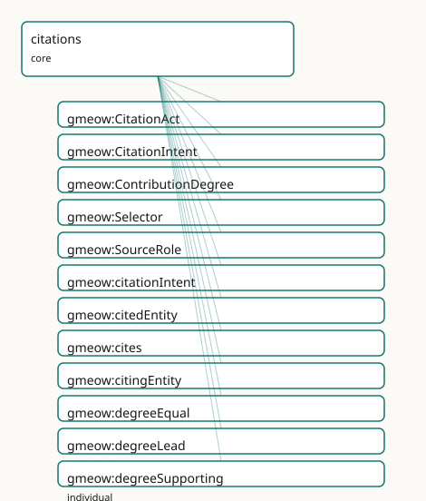

GMEOW Citations Module
- IRI: https://blackcatinformatics.ca/gmeow/slices/citations
- Tier: core
Group: core
What This Slice Covers
This slice owns 29 terms and contributes 20 mapping or projection rows. Use it when its terms match the native fact you want to preserve; use the linkage tables to see how those facts leave GMEOW for consumer vocabularies.
Dependencies
Consumers
- The citation/credit dogfood: CITATION.cff projection, slice manifests, scholarly credit.
Local Map

Examples
Citation Act
- Source:
slices/core/citations/examples/citation-act.ttl - GMEOW terms:
gmeow:CitationAct,gmeow:CreativeWork,gmeow:Selector,gmeow:citationIntent,gmeow:citedEntity,gmeow:cites,gmeow:citingEntity,gmeow:intentUsesMethodIn,gmeow:selectorPage,gmeow:selectorTextQuote
# SPDX-FileCopyrightText: 2026 Blackcat Informatics® Inc. <paudley@blackcatinformatics.ca>
# SPDX-License-Identifier: CC-BY-4.0
#
# Worked example: citation is flat-first, reified on demand (, P4 — the same
# promotion pattern as rights). A bare gmeow:cites edge covers "A references B".
# When the citation's INTENT and exact LOCATION matter, it is promoted to a
# gmeow:CitationAct relator binding gmeow:citingEntity × gmeow:citedEntity ×
# gmeow:citationIntent, pinned to a precise gmeow:Selector (page + verbatim quote)
# via gmeow:viaSelector. gmeow:cites pairsWith gmeow:CitationAct: the flat edge
# and its reification name the same fact at two levels of detail.
@prefix gmeow: <https://blackcatinformatics.ca/gmeow/> .
@prefix ex: <https://blackcatinformatics.ca/gmeow/examples/citations/> .
ex:myPaper a gmeow:CreativeWork ;
gmeow:title "On Coastal Erosion in Temperate Estuaries"@en ;
gmeow:cites ex:citedPaper .
ex:citedPaper a gmeow:CreativeWork ;
gmeow:title "Sediment Transport Models"@en .
# --- The reified act: not just THAT it cites, but WHY (uses a method from it)
# and WHERE (the exact passage the method appears in).
ex:cite1 a gmeow:CitationAct ;
gmeow:citingEntity ex:myPaper ;
gmeow:citedEntity ex:citedPaper ;
gmeow:citationIntent gmeow:intentUsesMethodIn ;
gmeow:viaSelector ex:sel1 .
ex:sel1 a gmeow:Selector ;
gmeow:selectorPage "42" ;
gmeow:selectorTextQuote "the modified Exner equation for bed evolution" .
Terms
Classes
| Term | Label | Definition |
|---|---|---|
gmeow:CitationAct |
Citation Act | A reified citation: a citing entity cites a cited entity with a typed intent, optionally via a selector (a pinpoint into the cited work), carrying provenance,... |
gmeow:CitationIntent |
Citation Intent | The intent with which one entity cites another — a VALUE vocabulary (individuals, never subclasses) characterizing a gmeow:CitationAct. Bridged by reference to... |
gmeow:ContributionDegree |
Contribution Degree | The degree or weight of a contribution — a VALUE vocabulary (individuals, never subclasses) characterizing a gmeow:Contribution. Lead, equal, and supporting ar... |
gmeow:Selector |
Selector | A pinpoint reference into a cited creative work — a page number, text position, text quote, or generic locator. Replaces the retired gmeow:Citation (which coll... |
gmeow:SourceRole |
Source Role | The anti-rigid role of being a source — borne by a gmeow:CreativeWork when it is used as evidence for a claim. A thing is only contingently a source; the same... |
Properties
| Term | Label | Definition |
|---|---|---|
gmeow:citationIntent |
citation intent | The intent with which the citation is made — a value from the open gmeow:CitationIntent vocabulary. Functional per relator: one intent per CitationAct. |
gmeow:citedEntity |
cited entity | The creative work that is cited — a Work, Expression, Manifestation, or Item. Functional per relator: one cited entity per CitationAct. |
gmeow:cites |
cites | Relates an entity to a creative work it cites — the flat 80%-case shortcut. Non-functional: an entity may cite many works. Promote to a gmeow:CitationAct node... |
gmeow:citingEntity |
citing entity | The entity that makes the citation — a claim, a work, a module, a dataset. Functional per relator: one citing entity per CitationAct. |
gmeow:isReferencedBy |
is referenced by | A related resource that references, cites, or otherwise points to the described resource. Inverse of gmeow:references. |
gmeow:references |
references | A related resource that is referenced, cited, or otherwise pointed to by the described resource. (RFC 5322 References for messages; bibliographic references fo... |
gmeow:selectorLocator |
selector locator | A generic locator string within a cited work (e.g. 'section 3.2', 'image 4', 'entry 17'), expressed as a literal within a selector. |
gmeow:selectorPage |
selector page | A page number or page range expressed as a literal within a selector. |
gmeow:selectorTextPosition |
selector text position | A character offset or text position within a cited work, expressed as a literal within a selector. |
gmeow:selectorTextQuote |
selector text quote | A verbatim text quote from the cited work, expressed as a literal within a selector. |
gmeow:viaSelector |
via selector | An optional pinpoint selector into the cited work — a page, text position, text quote, or locator. Non-functional: a citation may reference multiple selectors... |
Individuals
| Term | Label | Definition |
|---|---|---|
gmeow:degreeEqual |
equal | The contributor contributed equally. |
gmeow:degreeLead |
lead | The contributor led the effort. |
gmeow:degreeSupporting |
supporting | The contributor supported the effort in a secondary capacity. |
gmeow:intentBridgedByReference |
bridged by reference | The cited work is bridged by reference — aligned to but not imported as axioms (Principle 5). |
gmeow:intentCitesAsDataSource |
cites as data source | The cited work is used as a data source. |
gmeow:intentConformsTo |
conforms to | The citing entity conforms to the cited work (a standard, schema, or specification). |
gmeow:intentDerivedFrom |
derived from | The citing entity is derived from the cited work. |
gmeow:intentDisagreesWith |
disagrees with | The citing entity disagrees with the cited work. |
gmeow:intentDocuments |
documents | The citing entity documents the cited work. |
gmeow:intentExtends |
extends | The citing entity extends the cited work. |
gmeow:intentIsInspiredBy |
is inspired by | The citing entity is inspired by the cited work. |
gmeow:intentSupports |
supports | The cited work supports the citing entity. |
gmeow:intentUsesMethodIn |
uses method in | The cited work provides a method used by the citing entity. |
Linkages
- Rows: 20
- Projection profiles:
dcterms,oai_dc - External vocabularies:
cito,dc,dcterms,gxv,nmo,oa,schema
| Source | Kind | Profile | Predicate/Relation | Target | Evidence |
|---|---|---|---|---|---|
gmeow:CitationAct |
equivalence | - |
skos:relatedMatch | schema:citation | gmeow-evidence.sssom.tsv; gmeow:eqEvidence006; confidence 0.6 |
gmeow:Selector |
equivalence | - |
skos:closeMatch | gxv:SourceReference | gmeow-genealogy.sssom.tsv; gmeow:eqGenealogy052; confidence 0.85 |
gmeow:Selector |
equivalence | - |
skos:closeMatch | oa:Selector | gmeow-citations.sssom.tsv; gmeow:eqCit011; confidence 0.95 |
gmeow:cites |
equivalence | - |
owl:equivalentProperty | cito:cites | gmeow-citations.sssom.tsv; gmeow:eqCit001; confidence 1 |
gmeow:intentCitesAsDataSource |
equivalence | - |
skos:closeMatch | cito:citesAsDataSource | gmeow-citations.sssom.tsv; gmeow:eqCit002; confidence 0.95 |
gmeow:intentConformsTo |
equivalence | - |
skos:closeMatch | cito:obtainsSupportFrom | gmeow-citations.sssom.tsv; gmeow:eqCit006; confidence 0.85 |
gmeow:intentDerivedFrom |
equivalence | - |
skos:closeMatch | cito:isDerivedFrom | gmeow-citations.sssom.tsv; gmeow:eqCit007; confidence 0.95 |
gmeow:intentDisagreesWith |
equivalence | - |
skos:closeMatch | cito:disagreesWith | gmeow-citations.sssom.tsv; gmeow:eqCit010; confidence 0.95 |
gmeow:intentDocuments |
equivalence | - |
skos:closeMatch | cito:documents | gmeow-citations.sssom.tsv; gmeow:eqCit008; confidence 0.95 |
gmeow:intentExtends |
equivalence | - |
skos:closeMatch | cito:extends | gmeow-citations.sssom.tsv; gmeow:eqCit004; confidence 0.95 |
gmeow:intentIsInspiredBy |
equivalence | - |
skos:closeMatch | cito:isInspiredBy | gmeow-citations.sssom.tsv; gmeow:eqCit005; confidence 0.95 |
gmeow:intentSupports |
equivalence | - |
skos:closeMatch | cito:providesSupportFor | gmeow-citations.sssom.tsv; gmeow:eqCit009; confidence 0.9 |
gmeow:intentUsesMethodIn |
equivalence | - |
skos:closeMatch | cito:usesMethodIn | gmeow-citations.sssom.tsv; gmeow:eqCit003; confidence 0.95 |
gmeow:isReferencedBy |
equivalence | - |
skos:closeMatch | dcterms:isReferencedBy | gmeow-dublin-core.sssom.tsv; gmeow:eqDcTerms016; confidence 0.85 |
gmeow:references |
equivalence | - |
skos:closeMatch | dcterms:references | gmeow-dublin-core.sssom.tsv; gmeow:eqDcTerms015; confidence 0.85 |
gmeow:references |
equivalence | - |
skos:closeMatch | nmo:references | gmeow-email.sssom.tsv; gmeow:eqEmail024; confidence 0.95 |
gmeow:isReferencedBy |
projection | dcterms |
projects to / = | dcterms:isReferencedBy | gmeow:mapDctermsIsReferencedBy; confidence 0.85 |
gmeow:isReferencedBy |
projection | oai_dc |
projects to / <= | dc:relation | gmeow:mapOaiDcIsReferencedBy; confidence 0.7; lossy: all relation refinements collapse to dc:relation |
gmeow:references |
projection | dcterms |
projects to / = | dcterms:references | gmeow:mapDctermsReferences; confidence 0.85 |
gmeow:references |
projection | oai_dc |
projects to / <= | dc:relation | gmeow:mapOaiDcReferences; confidence 0.7; lossy: all relation refinements collapse to dc:relation |
Guide
Citations — who cites what, why, and exactly where
Slice:
https://blackcatinformatics.ca/gmeow/slices/citations· tier: core The universal citation, credit, and attribution facility: every "see source X" in the model is one of these.
Citation, credit, and attribution — the universal CitationAct relator, Contribution degree, and selector vocabulary. Replaces the old sources.ttl evidence link with a typed, reified citation relator and an anti-rigid SourceRole. Bridges to CiTO, CRediT, PROV-O, and PAV by reference (Principle 5).
A citation is not a bare edge — it is an act, with an author, an intent, and a pinpoint.
The slice is flat-first: gmeow:cites covers the 80 % case, and the machine-readable
gmeow:pairsWith assertion (cites ↔ CitationAct) tells tooling exactly which relator
to promote to when intent, selector, provenance, or standpoint must be recorded. The
why of a citation is a value from the open, CiTO-shaped gmeow:CitationIntent
vocabulary (Principle 9 — individuals, never subclasses), and the where is a
gmeow:Selector — a pinpoint that specializes the evidence-span mechanism rather than
reinventing it. This is also the most aggressively dogfooded slice in GMEOW: the
project's own credit model and CITATION.cff projection ride this machinery.
The rubrics facility (extensions/norms) extends the relator rather than forking it:
gmeow:Exemplar is a SubKind of gmeow:CitationAct — a citation with polarity that
holds the cited span up as a positive, negative, or cautionary example — so the CiTO
alignment arrives there for free.
The citation relator
gmeow:CitationAct
The reified citation: a citing entity cites a cited creative work with a typed intent,
optionally via one or more selectors, carrying provenance, confidence, and standpoint.
The promoted form of gmeow:cites (gmeow:pairsWith). Open-world EL restrictions
require some citing entity, cited entity, and intent; closed-world cardinality is
SHACL's. Genealogical evidence is a CitationAct with gmeow:intentCitesAsDataSource
toward a work, via a selector — the typed replacement for the old hasSource link.
gmeow:cites
The flat 80 %-case shortcut from any gmeow:Entity to a gmeow:CreativeWork.
Non-functional. Promote to a gmeow:CitationAct the moment intent, pinpoint,
provenance, or standpoint matters — never bolt those onto the flat triple.
gmeow:citingEntity · gmeow:citedEntity
The two functional posts of the relator: one citing entity (any Entity — a claim, a
module, a dataset) and one cited entity (a gmeow:CreativeWork — any WEMI tier) per
CitationAct. Several citations to the same work are several acts, each with its own
intent and selector.
gmeow:citationIntent · gmeow:CitationIntent
The typed why — a functional pointer into an open value vocabulary bridged by
reference to CiTO sub-properties (cito:citesAsDataSource and kin, Principle 5). Seeds
run from gmeow:intentCitesAsDataSource through gmeow:intentDisagreesWith to
gmeow:intentBridgedByReference — the last being the intent GMEOW itself uses to record
its own Principle-5 alignments. A new intent is a fresh individual, never a subclass.
gmeow:viaSelector · gmeow:Selector
The pinpoint into the cited work: page (gmeow:selectorPage), character position,
verbatim quote, or generic locator. Non-functional — one citation may span several
pages. Selector is a specialization of gmeow:EvidenceSpan and is reused
by the annotation target span; it replaces the retired gmeow:Citation
class that collided with scholarly citation.
Credit and source-hood
gmeow:ContributionDegree
The weight of a contribution — an open value vocabulary (Principle 9) characterizing
the universal gmeow:Contribution relator: gmeow:degreeLead, gmeow:degreeEqual,
gmeow:degreeSupporting as seeds, CRediT-shaped, projected to CITATION.cff and
CrossRef contributor metadata.
gmeow:SourceRole
The anti-rigid RoleMixin of being a source: a CreativeWork is only contingently a
source — evidence for one claim, subject of another, a work in its own right
throughout. Source-hood is primarily relator-mediated via CitationAct; SourceRole is
the named handle for the rare case that needs one. Nothing is a source by kind.
gmeow:references · gmeow:isReferencedBy
The generic flat Entity→Entity reference pair, gathered here by the dependency surgery
of one definition serves RFC 5322 message threading and bibliographic
referencing alike. The flat-first companion of the typed machinery above — promote when
kind, locus, or standpoint matters.
Solver layer & deferred alignment
Citation analytics — counting, ranking, co-citation clustering, credit rollups — are
solver-layer computations (Principle 12): the slice records the acts; it never asserts
derived metrics as facts. CiTO, CRediT, PROV-O, and PAV remain bridges by reference,
never axiom imports (Principle 5); the rubrics-facility projections (EARL, DQV,
schema.org Rating) arrive free through Exemplar ⊑ CitationAct and are deferred to the
compiler-arc window.
Dependencies
Depends on kernel, documents (the CreativeWork range), and evidence (the
EvidenceSpan that Selector specializes). Consumed by the citation/credit dogfood
, slice manifests, and the norms extension's Exemplar.